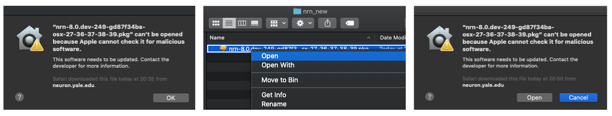

NEURON can be installed on a wide variety of hardware platforms. Based on your system and software environment you can choose one of the installation method described below.
Installing Binary Distribution¶
If you want to quickly get started with NEURON, we provide binary installers for Linux, Mac and Windows platforms.
Windows¶
On Windows only recommended way to install NEURON is using binary installer. You can download alpha or recent releases from below URLs:
Windows installers have name in the format of nrn-<version-id>-mingw-py-27-36-37-38-39-setup.exe.
The py-27-36-37-38-39 string in the installer name indicates that the given installer is compatible
with Python versions 2.7, 3.6, 3.7, 3.8 and 3.9. Once the installer is downloaded, you can install it
by double clicking like any other Windows application. Note that you have to install python separately
if python support is required. You can find detailed step-by-step instructions in [this presentation]
(https://neuron.yale.edu/ftp/neuron/nrn_mswin_install.pdf).
Mac OS¶
Since version 7.8.1 we are providing Python wheels and NEURON can be installed using pip as:
pip3 install neuron
With pip only Python3 wheels are provided via pypi.org.
Like Windows, you can also use a binary installer to install NEURON. You can download alpha or recent releases from below URLs:
Mac OS installers have name in the format of nrn-<version-id>-osx-27-36-37-38-39.pkg. Like windows
installer, py-27-36-37-38-39 string in the installer name indicates that the given installer is
compatible with Python versions 2.7, 3.6, 3.7, 3.8 and 3.9. Note that if you double-click the installer
then you might see warning like below. In this case you have to right-click on the installer and then
click Open. You can then see an option to Open installer:

This will install NEURON under directory /Applications/NEURON-<version>/ directory. For GUI support you
have to install XQuartz separately. Once you start Terminal application, NEURON
binaries (nrniv, neurondemo etc.) should be available to start.
Linux¶
Like Mac OS, since 7.8.1 release python wheels are provided and you can use pip to install NEURON as:
pip3 install neuron
Note that only Python3 wheels are provided. Note that for recent releases we are not providing .rpm or .deb installers.
Installing Source Distributions¶
If you are running NEURON in cluster/HPC environment where you would like to have better performance (e.g. using vendor compilers like Intel, Cray, AMD, NVIDIA etc.), we advise you to build the NEURON from source. Note that to use CoreNEURON with optimised CPU/GPU support, you have to install NEURON from source.
Currently, we are supporting two build systems:
Note that starting with the 8.0 release, CMake is used as the primary build system for NEURON. We would be grateful for any feedback or issues you encounter using the CMake-based build system. Please report any issue here and we will be happy to help. In addition to the instructions below, you can find up to date build scripts for different platforms in nrn-build-ci repository.
If you are using autotools, we strongly recommend switching to CMake as of now.
Install Build Dependencies¶
In order to build NEURON from source, the following packages must be available:
- Bison
- Flex
- C/C++ compiler suite
- CMake 3.8 or Autotools
The following packages are optional (see build options):
- Python >=2.7, or Python >=3.5 (for Python interface)
- Cython (for RXD)
- MPI (for parallel)
- X11 (Linux) or XQuartz (MacOS) (for GUI)
Depending on platform you can install these dependencies as follows:
Mac OS¶
This is for x86_64. For Apple M1 (arm64), see here
The easiest way to install dependencies on Mac OS is to use brew or conda package manager. For example, once brew is installed you can do:
brew install coreutils openmpi cmake
brew install --cask xquartz
Once these packages are installed, you can setup PATH as:
export PATH=/usr/local/bin/:$PATH
If the desired python version is not installed, you can install it using official distribution. Also, note that Xcode Command Line Tools needs to be installed for development.
Apple M1¶
Install command line tools as
xcode-select --install
If desire classical NEURON GUI : from xquartz.org, click “Releases”, click XQuartz-2.8.0_beta3 , and follow instructions. After installing, logout and log back in.
If you desire single click button action for X11 when entering a window then execute below command:
defaults write org.xquartz.X11 wm_ffm -bool trueFor the new default to take effect, logout then log back in.
Install dependencies with HomeBrew and pip as:
# install brew and initialize shell /bin/bash -c "$(curl -fsSL https://raw.githubusercontent.com/Homebrew/install/HEAD/install.sh)" echo 'eval $(/opt/homebrew/bin/brew shellenv)' >> $HOME/.zprofile eval $(/opt/homebrew/bin/brew shellenv) brew install cmake brew install open-mpi pip3 install --user --upgrade pip export PATH="$HOME/Library/Python/3.8/bin":$PATH pip3 install --user cython
Linux¶
Depending on the platform (Ubuntu, CentOS, Fedora, Debian, Red Hat etc.), there are different ways to install dependencies. For example, on Ubuntu:
sudo apt-get update
sudo apt-get install -y bison cmake flex git \
libncurses-dev libopenmpi-dev libx11-dev \
libxcomposite-dev openmpi-bin python3-dev
# for python dependencies
pip install scipy numpy cython
# for autotools based installation only
sudo apt-get install -y automake libtool make
We recommend using platform specific instructions provided in nrn-build-ci repository.
Install NEURON using CMake¶
Starting with the 7.8.1 release, NEURON can be installed using the CMake build system. One of the primary advantages of a CMake-based build system is cross-platform support and integration with other projects like Interviews, CoreNEURON, NMODL etc. These projects are now integrated into single a CMake-based build system, and they can be installed together as shown below:
- Clone the latest version or specific release:
git clone https://github.com/neuronsimulator/nrn # latest development branch
git clone https://github.com/neuronsimulator/nrn -b 7.8.2 # specific release version 7.8.2
cd nrn
- Create a build directory:
mkdir build
cd build
- If you are building on Cray systems with a GNU toolchain, you have to set the following environmental variable:
export CRAYPE_LINK_TYPE=dynamic
- Run
cmakewith the appropriate options (see below for a list of common options). A full list of options can be found innrn/CMakeLists.txtand defaults are shown innrn/cmake/BuildOptionDefaults.cmake. e.g. a bare-bones installation:
cmake .. \
-DNRN_ENABLE_INTERVIEWS=OFF \
-DNRN_ENABLE_MPI=OFF \
-DNRN_ENABLE_RX3D=OFF \
-DCMAKE_INSTALL_PREFIX=/path/to/install/directory
- Build the code:
make -j
make install
- Set PATH and PYTHONPATH environmental variables to use the installation:
export PATH=/path/to/install/directory/bin:$PATH
export PYTHONPATH=/path/to/install/directory/lib/python:$PYTHONPATH
Particularly useful CMake options are (use ON to enable and OFF to disable feature):
- -DNRN_ENABLE_INTERVIEWS=OFF : Disable Interviews (native GUI support)
- -DNRN_ENABLE_PYTHON=OFF : Disable Python support
- -DNRN_ENABLE_MPI=OFF : Disable MPI support for parallelization
- -DNRN_ENABLE_RX3D=OFF : Disable rx3d support
- -DNRN_ENABLE_CORENEURON=ON : Enable CoreNEURON support
- -DNRN_ENABLE_TESTS=ON : Enable unit tests
- -DPYTHON_EXECUTABLE=/python/binary/path : Use provided Python binary to build Python interface
- -DCMAKE_INSTALL_PREFIX=/install/dir/path : Location for installing
- -DCORENRN_ENABLE_NMODL=ON : Use NMODL instead of MOD2C for code generation with CoreNEURON
- -DNRN_ENABLE_BINARY_SPECIAL=ON : Build special as a binary instead of shell script
Please refer to docs/cmake_doc/options.rst for more information on the CMake options.
Optimized CPU and GPU Support using CoreNEURON¶
NEURON now integrates CoreNEURON library for improved simulation performance on modern CPU and GPU architectures. CoreNEURON is designed as a library within the NEURON simulator and can transparently handle all spiking network simulations including gap junction coupling with the fixed time step method. You can find detailed instructions here and here.
Install NEURON using Autotools¶
If you would like to have GUI support, you first need to install the Interviews package available from GitHub
here or the tarball provided here.
In case of the former, first you need to run build.sh script to create the automake, autoconf, and libtool generated files:
sh build.sh
And then run the standard configure, make and make install steps to install Interviews:
./configure --prefix=/path/to/install/directory
make
make install
To build NEURON we have to use the same steps as Interviews, i.e., if the source is obtained from the git repository,
run build.sh script to create the automake, autoconf, and libtool generated files:
sh build.sh
and then run the standard configure, make and make install steps:
./configure --prefix=/path/to/install/directory
make
make install
You can set the following environmental variables to use the installation:
export PATH=/path/to/install/directory/<arch>/bin:$PATH # replace <arch> with x86_64 or other platform directory
export PYTHONPATH=/path/to/install/directory/lib/python:$PYTHONPATH
If you want to customize the build, particularly useful configure options are:
--prefix=/some/path: Install in this location of your filesystem.--without-x: If the InterViews graphics library is not installed, disable GUI.--with-iv=<prefix>/../iv: If InterViews was not installed in/../iv --with-paranrn: Parallel models on cluster computers using MPI--with-nrnpython: Use Python as an alternative interpreter (as well as the native HOC interpreter).--with-nmodl-only: Build nmodl only (in case of cross compiling)--disable-rx3d: Do not compile the cython translated 3-d rxd features
For additional options, see ./configure --help.
Some systems require unusual options for compilation or linking that the configure script does not know about.
You can give configure initial values for variables by setting them in the environment. Using a Bourne-compatible
shell, you can do that on the command line like this:
CFLAGS="-O2" CXXFLAGS="-O2" CC=gcc CXX=g++ ./configure <other options>
For more installation information see: https://neuron.yale.edu/neuron/download/getdevel.
FAQs¶
- I am getting link errors “undefined reference to ‘tgoto, tgetent, tputs’”.
This is often an issue due to missing ncurses library linking. In this case, we recommend trying
-DNRN_ENABLE_INTERNAL_READLINE=ON CMake option.
- I installed NEURON via pip but while using MPI I get “could not dynamically load libmpi.so or libmpich.so”.
NEURON will try to find MPI library in the standard library paths (e.g. /usr/lib). But on some systems MPI
libraries may not be in standard path. In that case you can try setting LD_LIBRARY_PATH (on linux) or DYLD_LIBRARY_PATH (on Mac OS):
export LD_LIBRARY_PATH=/path/of/mpi/installation/lib:$LD_LIBRARY_PATH
In some scenarios this may not be enough (e.g. with Anaconda installed MPI) in which case you can explicitly provide the path of MPI library using:
export MPI_LIB_NRN_PATH=/Applications/anaconda3/lib/libmpi.12.dylib
- Can I move installation directory?
As with any other UNIX package, it is not a good idea to move NEURON around once you’ve installed it, because the directory names are coded into the files themselves. If you need to move it, put a soft link in its original location that points to the new location (so the old filenames will still work). Better yet, simply recompile neuron specifying the new installation directory.
- How can I compile my mod files?
- cd to the directory that contains your .mod files.
- type “/install/dir/bin/nrnivmodl” (or, if you put that directory in your path, just type “nrnivmodl”)
This will create a subdirectory of the current directory which is your CPU name (e.g. x86_64). Inside this
directory is created the program “special”, which is the neuron binary that you want to run instead of nrniv.
- NEURON fails to launch because shared libraries cannot be found.
Make sure to LD_LIBRARY_PATH or DYLD_LIBRARY_PATH environmental variables. For example, using bash shell:
export LD_LIBRARY_PATH=/install/path/lib:$LD_LIBRARY_PATH. # on linux
export DYLD_LIBRARY_PATH=/install/path/lib:$DYLD_LIBRARY_PATH. # on Mac OS